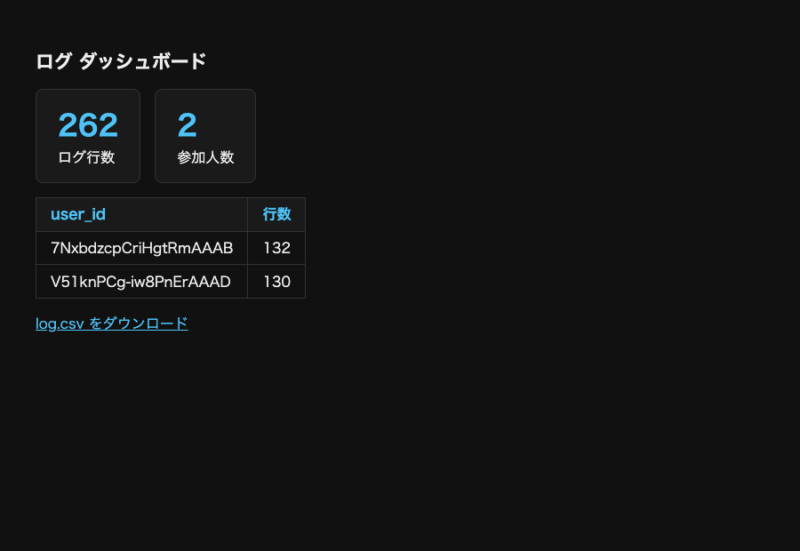

この回のゴールは 「自分たちが歩いたデータが、手元のCSVになる」 こと。第4回と同じく、まずは中身を気にせずそのままコピペして動かし、感動を先に味わう 。「なぜ動くのか」は、このあと節3以降で今動かしたコードを分解して 理解していく。
やること（4ステップ）
下の3ファイルをそのままコピペ して保存する（穴埋めなし・完成版）
node server.js → http://localhost:3000 を2つの窓 で開き、歩いて・箱をクリック するhttp://localhost:3000/dashboard.html を開く → ログの行数が どんどん増えていく 🔥 ターミナルで Ctrl + C → もう一度 node server.js → ダッシュボードの数字が消えていない ！
📁 どこに作るか
md2_no5/
├── server.js ← ①これを作る（md2_no5 の直下）
├── package.json （作成ずみ）
├── node_modules/ （作成ずみ）
└── public/
├── index.html ← ②これを作る（public の中）
└── dashboard.html ← ③これを作る（public の中）
ファイル1: server.js（md2_no5 の直下）── 完成版・そのままコピペ
JavaScript ── server.js const express = require ('express' );
const socketIo = require ('socket.io' );
const Database = require ('better-sqlite3' );
const app = express ();
app.use (express.static ('public' ));
const server = app.listen (3000 , () => {
console.log ('サーバ起動: http://localhost:3000' );
});
const io = socketIo (server);
// データベースを開く（無ければ logs.db が作られる）
const db = new Database ('logs.db' );
// ログを溜める表を作る（1行 = 行動データ1件）
db.exec (`
CREATE TABLE IF NOT EXISTS logs (
id INTEGER PRIMARY KEY AUTOINCREMENT,
user_id TEXT,
t INTEGER,
event TEXT,
x REAL,
y REAL,
z REAL
)
` );
// 1行を書き込む命令を、あらかじめ用意しておく
const insertLog = db.prepare (
'INSERT INTO logs (user_id, t, event, x, y, z) VALUES (?, ?, ?, ?, ?, ?)'
);
io.on ('connection' , (socket) => {
console.log ('接続しました:' , socket.id);
insertLog.run (socket.id, Date.now (), 'join' , 0 , 0 , 0 );
socket.on ('move' , (data) => {
insertLog.run (socket.id, Date.now (), 'move' ,
data.position.x, data.position.y, data.position.z);
socket.broadcast.emit ('moved' , {
id: socket.id, position: data.position, color: data.color
});
});
socket.on ('click' , (data) => {
insertLog.run (socket.id, Date.now (), 'click' ,
data.position.x, data.position.y, data.position.z);
console.log ('クリック:' , socket.id);
});
socket.on ('disconnect' , () => {
console.log ('切断しました:' , socket.id);
insertLog.run (socket.id, Date.now (), 'leave' , 0 , 0 , 0 );
io.emit ('userLeft' , socket.id);
});
});
// ログを CSV にして返す
app.get ('/log.csv' , (req, res) => {
const rows = db.prepare ('SELECT * FROM logs ORDER BY id' ).all ();
let csv = 'id,user_id,t,event,x,y,z\n' ;
for (const r of rows) {
csv += `${r.id},${r.user_id},${r.t},${r.event},${r.x},${r.y},${r.z}\n` ;
}
res.setHeader ('Content-Type' , 'text/csv; charset=utf-8' );
res.setHeader ('Content-Disposition' , 'attachment; filename="log.csv"' );
res.send (csv);
});
// ダッシュボード用の集計を返す
app.get ('/api/stats' , (req, res) => {
const total = db.prepare ('SELECT COUNT(*) AS n FROM logs' ).get ().n;
const users = db.prepare ('SELECT COUNT(DISTINCT user_id) AS n FROM logs' ).get ().n;
const perUser = db.prepare (
'SELECT user_id, COUNT(*) AS n FROM logs GROUP BY user_id ORDER BY n DESC'
).all ();
res.json ({ total, users, perUser });
});ファイル2: public/index.html ── 完成版・そのままコピペ
第4回の index.html に、クリックできる箱3つ とクリックを送る処理 を足しただけ。
HTML ── public/index.html <!DOCTYPE html>
<html lang="ja" ><head>
<meta charset="UTF-8" ><title> ログを取る空間</title>
<script src="https://aframe.io/releases/1.7.1/aframe.min.js" ></script>
<script src="/socket.io/socket.io.js" ></script>
</head><body>
<a-scene id="scene" >
<a-plane rotation="-90 0 0" width="30" height="30" color="#4a7a3a" ></a-plane>
<a-sky color="#87CEEB" ></a-sky>
<!-- クリックの対象になる箱を3つ置く -->
<a-box class="target" position="-3 1 -5" color="#FF8A3D" ></a-box>
<a-box class="target" position="0 1 -7" color="#E040FB" ></a-box>
<a-box class="target" position="3 1 -5" color="#FFD54F" ></a-box>
<a-camera id="cam" position="0 1.6 4" >
<!-- 画面中央の照準。箱に合わせてクリックする -->
<a-cursor color="#FFFFFF" ></a-cursor>
</a-camera>
</a-scene>
<script>
const socket = io ();
const scene = document.getElementById ('scene' );
const cam = document.getElementById ('cam' );
const palette = ['#4FC3F7' , '#FF8A3D' , '#93D500' , '#E040FB' , '#FFD54F' ];
const myColor = palette[Math.floor (Math.random () * palette.length)];
// 100ミリ秒ごとに、自分の位置をサーバへ送る
setInterval (() => {
const pos = cam.object3D.position;
socket.emit ('move' , { position: { x: pos.x, y: pos.y, z: pos.z }, color: myColor });
}, 100 );
// 箱をクリックしたら、そのときの自分の位置を送る
document.querySelectorAll ('.target' ).forEach ((box) => {
box.addEventListener ('click' , () => {
const pos = cam.object3D.position;
socket.emit ('click' , { position: { x: pos.x, y: pos.y, z: pos.z } });
box.setAttribute ('color' , '#FFFFFF' );
});
});
function createAvatar (id, color) {
const avatar = document.createElement ('a-sphere' );
avatar.setAttribute ('id' , id);
avatar.setAttribute ('radius' , '0.5' );
avatar.setAttribute ('color' , color);
scene.appendChild (avatar);
return avatar;
}
socket.on ('moved' , (data) => {
let avatar = document.getElementById (data.id);
if (!avatar) avatar = createAvatar (data.id, data.color);
avatar.setAttribute ('position' , data.position);
});
socket.on ('userLeft' , (id) => {
const avatar = document.getElementById (id);
if (avatar) avatar.parentNode.removeChild (avatar);
});
</script>
</body></html> ファイル3: public/dashboard.html ── 完成版・そのままコピペ
HTML ── public/dashboard.html <!DOCTYPE html>
<html lang="ja" ><head>
<meta charset="UTF-8" ><title> ログ ダッシュボード</title>
<style>
body { font-family: sans-serif; background: #111; color: #eee; padding: 2rem; }
.cards { display: flex; gap: 1rem; margin: 1rem 0; }
.c { background: #1a1a1a; border: 1px solid #333; border-radius: 8px; padding: 1rem 1.5rem; }
.c .n { font-size: 2rem; font-weight: bold; color: #4FC3F7; }
table { border-collapse: collapse; margin-top: 1rem; }
th, td { border: 1px solid #333; padding: 0.4rem 1rem; text-align: left; }
th { background: #1a1a1a; color: #4FC3F7; }
a { color: #4FC3F7; }
</style>
</head><body>
<h1> ログ ダッシュボード</h1>
<div class="cards" >
<div class="c" ><div class="n" id="total" > -</div> ログ行数</div>
<div class="c" ><div class="n" id="users" > -</div> 参加人数</div>
</div>
<table><thead><tr><th> user_id</th><th> 行数</th></tr></thead><tbody id="rows" ></tbody></table>
<p><a href="/log.csv" > log.csv をダウンロード</a></p>
<script>
async function update () {
const res = await fetch ('/api/stats' );
const stats = await res.json ();
document.getElementById ('total' ).textContent = stats.total;
document.getElementById ('users' ).textContent = stats.users;
document.getElementById ('rows' ).innerHTML = stats.perUser
.map ((u) => `<tr><td>${u.user_id}</td><td>${u.n}</td></tr>` ).join ('' );
}
update ();
setInterval (update, 1000 ); // 1秒ごとに最新の集計に更新する
</script>
</body></html> 動かす
Terminal # md2_no5 の中で実行（このターミナルは開いたまま）
node server.jshttp://localhost:3000 を2つの窓 で開き、WASDキー で歩いて、箱に照準を合わせてクリック する。クリックした箱は白くなる。ターミナルには接続・クリックのログが流れる。
① 1人目の画面
1人目の視点: 相手のスフィア と、クリックして白くなった箱 が見える。
② 2人目の画面
2人目の視点: 同じ空間で相手のスフィア が見える。第4回と同じ仕組み。
ターミナル — node server.js
実行結果: 接続しました／クリック／切断しました が流れる。これは画面に出しているだけ 。同時に、裏で logs.db に1行ずつ書かれている。
ダッシュボードを開く
3つ目の窓で http://localhost:3000/dashboard.html を開く。歩いているだけで、ログ行数がどんどん増えていく のが見える（1人につき毎秒10行ずつ）。
ログ ダッシュボード — Chrome

ダッシュボード: ログ行数 と参加人数 、user_id ごとの行数。これは /api/stats が SQL で集計した結果を表示している。
🔥 今日の感動ポイント：サーバを止めて、もう一度立ち上げてみよう
ターミナルで Ctrl + C を押してサーバを止める。そしてもう一度 node server.js で起動し、ダッシュボードを再読み込みする。
第4回まで： サーバを止めた瞬間、すべて消えていた（メモリ＝机の上）今日： ログ行数はそのまま残っている 。さっき歩いた記録が、logs.db というファイルに焼き付いている から
これが「永続化 」。データがプログラムの寿命より長生きする ようになった、ということ。ここが今日いちばんの分かれ目。
動かないときのチェック
Cannot find module 'better-sqlite3'：npm install better-sqlite3 を md2_no5 の中で実行したか確認する箱がクリックできない： <a-cursor> を <a-camera> の中 に書いたか確認する。画面中央の照準を箱に合わせてからクリックするダッシュボードが - のまま： /api/stats を直接ブラウザで開いてみる。JSONが表示されればサーバ側はOK行数が増えない： 3D空間の窓を開いたままにしているか確認する（閉じると move の送信も止まる）
👏 動いた？ では、ここからが本番
たった今、あなたは「消えないデータ」 を手に入れた。でもコピペしただけ では自分のものにならない。ここからは ①いま動かした構成を声に出して確認（gw5）→ ②ログ1行を設計して表を作る（std5-1）→ ③SQLを分解して理解（節4）→ ④記録・CSV・分析を自分の手で組み立てる（std5-2〜4） と進む。
Notion に、ダッシュボードにログ行数が溜まっている様子 と、サーバを再起動しても数字が消えていない ことのキャプチャを貼る（std5-1〜3の記録はこの体験でとってもよい）。